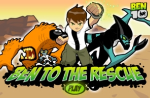

Um dos jogos que eu mais joguei durante a pandemia
Conheci na época que o flash já não existia mais,
e eu não tinha computadorüòê
O jogo que eu nunca zerei

Possível memória falsa de ter entrado nesse jogo (acho que só assisti vídeos )
Jogo que eu jogava na escola com os amigos